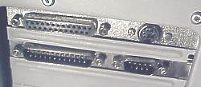
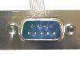
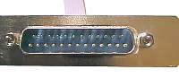
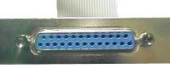

Присоединение
стандартных периферийных устройств к персональному компьютеру производится
через устройства сопряжения (адаптеры), на которых реализованы стандартные
последовательный или параллельный интерфейсы — порты ввода-вывода. В качестве
последовательного стандартного интерфейса используется RS-232C (Recomended
Standard), в качестве параллельного — Cetronics.
Порт
называется последовательным, когда информационные биты передаются последовательно
один за другим; параллельным, когда несколько бит данных передаются одновременно,
параллельно.
|

|

|

|
|
порт COM1
|
порт COM2
|
порт LPT1
|
Последовательный порт
Последовательный
порт (COM) используется для подключения удаленного принтера, мыши, внешнего
модема и др. MS-DOS поддерживает до 4 последовательных портов с логическими
именами COM1...COM4. Последовательный интерфейс передает данные последовательно
по одному биту, с синхронизацией, основанной на паритете, четности и стоповых
битах. Для передачи и приема в них используется два канала (один для передачи
и один для приема) и несколько дополнительных сигнальных линий. Для подключения
используется 9-контактный разъем DB-9 или 25-контактный DB-25. Максимальная
длина кабеля — 30 м.
Базовая
микросхема обеспечивает максимальную скорость передачи данных 115200 бит/с.
Обмен через параллельный порт осуществляется на дискретных скоростях 2400,
4800, 9600, 19200 бит/с с использованием стандартных встроенных средств
BIOS. При специальном программировании можно достичь скорости 115200 и
выше.
Параллельный порт
Параллельный
порт (LPT) используется для подключения принтера, плоттера, сканера. MS-DOS
поддерживает максимум 3 параллельных порта с логическими именами LPT1,
LPT2, LPT3. Он имеет восемь разрядов шины данных и способен передавать
информацию байтами синхронно по восьми проводникам. Подсоединение кабеля
к адаптеру интерфейса производится через 25-контактный разъем типа DB-25,
имеющий 12 выходов и 5 входов. Со стороны принтера используется 36-контактный
разъем типа Cetronics, имеющий 12 входов и 5 выходов. Остальные контакты
служебные (система связи, питание +5 В, земля и др.). Максимальная длина
соединительного кабеля — 3 м.
При использовании
матричного принтера скорость передачи данных не превышает 300 Кбайт/с.
Для современных печатающих систем разработаны модификации скоростных интерфейсов
EPP (Enhanced Parallel Port) и ECP (Extended Capabilities Port), обеспечивающие
передачу данных до 2...5 Мбайт/с и двухстороннюю передачу.
Инфракрасный порт
Инфракрасный
порт используется для связи портативных компьютеров с настольными, для
подключения лазерных принтеров. Устройство порта включает светодиод, работающий
в инфракрасном диапазоне, и фотоэлемент, принимающий и преобразующий свет
в электрические сигналы. Технология предложена фирмой Hewlett Packard в
1994 г.
Преимущества
порта — низкая цена и невысокое энергопотребление. Скорость передачи данных
— до 115200 бит/с, расстояние — до 1 м, угод излучения — 30 градусов.
Игровой порт (game-port)
Игровой порт
используется для подключения джойстика. Он обычно расположен на звуковой
карте, либо на многофункциональной плате ввода-вывода (Multi I/O Card).
Адаптер принимает до 4 цифровых входов типа "ON-OFF" и до четырех аналоговых
входов (изменение параметров).